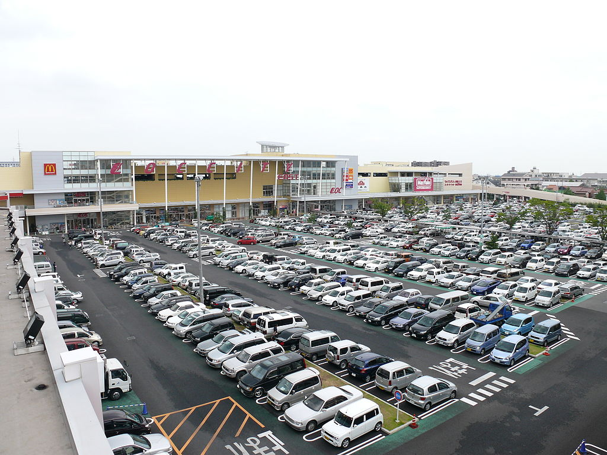
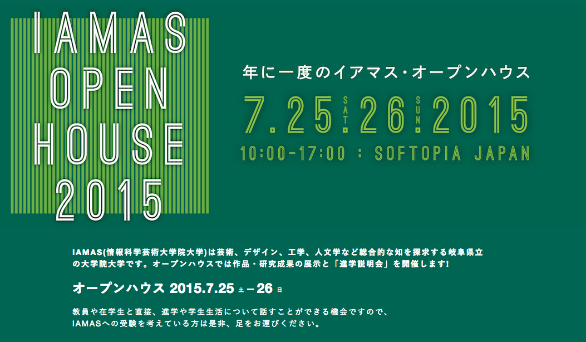

〜前回のあらすじ〜
イア子とマス男は、岐阜県立情報科学芸術大学院大学、
通称IAMAS（イアマス）の1年生！
7月25日（土）、26日（日）に開催される「IAMAS OPENHOUSE」に向けて、
案内の準備を進めているよ！
画像や動画を拾ってチープなキャプションつけるクソバイラルを見習って、
みんなにIAMASの情報を拡散したいと思ってがんばっているよ！
〜登場人物紹介〜

イア子ちゃん
22歳、美大卒のIAMAS 1年生！
新しい映像表現方法を考えたくてIAMASにやってきたよ！

マス男くん
28歳、工学部卒、Web系ベンチャー出身のIAMAS 1年生！
ライゾマティクスみたいなことがしたくてIAMASにやってきたよ！

ラマ
耳が長いほうがラマだよ！IAMASにはいないよ！

アルパカ
耳が短いほうがアルパカだよ！IAMASにはいないよ！
第2回：IAMASってなに？OPENHOUSEってなに？
さて、Webサイトが立ち上がったけれど、これからなにをしていこうか？
そうね、IAMASについてしっかり説明してみようかしら。
そうだね！
IAMASは、情報科学芸術大学院大学、という、
岐阜県大垣市にある岐阜県立の大学院だよ！
ご覧の通り正式名称が長いから、通称IAMAS（イアマス）と呼ばれているよ！
「いままであんたみたいなミジンコ野郎にあらゆる場所で虐げられてきたわ」
I mamade
A ntamitaina
M ijinkoyarouni
A rayurubashode
S hiitageraretekitawa
乱暴な上にあんまり面白くないよイア子ちゃん…
正解は、Institute of Advanced Media Art and Scienceだよ！
こじつけ感が否めないわね…
ダメだよイア子ちゃん！怖い人が来るよ！
英語名の通り、応用的なメディアアートと科学の大学院として、
文系とか理系とか芸術系とか関係なく、
いろんな分野の先生・学生が集まっているよ！
それは本当にそうね！面白い人いっぱいいるものね！
先生方だけでも、
ネットワークの専門家やデザインの専門家、
インターネットが普及するずっと前から電子音楽作品を作ってきた先生や、
日本のメディアアートを20年近く牽引しつづけている先生、
ビエンナーレのキュレーターをしている先生、
地域におけるメディアについて研究している先生、
などなど…ひとりひとり全く別の得意分野を持った先生方が集まっているね。

教員 | 情報科学芸術大学院大学
http://www.iamas.ac.jp/people
学生たちも、
美大を卒業してきた人や、理系の学部を卒業してきた人はもちろん、
研究所で研究をしていた人、広告代理店で営業をしていた人、
マレーシアで起業してきた人や、
韓国の大手企業でデザイナーをしていた人、
本当にバラバラのバックグラウンドの人がいるわね。

学生→IAMAS、社会人→IAMASの割合
※データは昨年の在籍学生のものです
年齢層も、20代が多いけれど、先生方より年上の人もいるよね。
学生の年齢
※データは昨年の在籍学生のものです
あらゆる専門分野やバックグラウンドを持った人たちが、
「IAMASで学びたい」という気持ちの上では対等に、いろんな議論ができる、
というのは、本当にすごいことだといつも感じるわ。
面白いよねえ。こんな岐阜県大垣市みたいな、
東京から２時間半以上、名古屋からも30分以上離れた田舎に、
こんな面白いところがあると思ってなかったよ。
待って！大垣だって人口16万人いるような、そこそこ都会なのよ！
そうか…？
イオンモールだってイオンタウンだってアクアウォークだってあるわよ！

イオンタウン大垣
http://ja.wikipedia.org/wiki/%E3%82%A4%E3%82%AA%E3%83%B3%E3%82%BF%E3%82%A6%E3%83%B3%E5%A4%A7%E5%9E%A3

イオンモール大垣
http://ja.wikipedia.org/wiki/%E3%82%A4%E3%82%AA%E3%83%B3%E3%83%A2%E3%83%BC%E3%83%AB%E5%A4%A7%E5%9E%A3
アクアウォーク
http://ja.wikipedia.org/wiki/%E3%82%A2%E3%82%AF%E3%82%A2%E3%82%A6%E3%82%A9%E3%83%BC%E3%82%AF%E5%A4%A7%E5%9E%A3
大都会かよ！！大垣の紹介はおいおいしよう。
とにかく今回は、オープンハウスの紹介だ！

オープンハウスでは、
IAMASについての紹介や、IAMASで学べることの紹介はもちろん、
IAMASで先生方と学生たちが取り組んでいるプロジェクトの紹介や、
学生たちによる学内展示・パフォーマンス、学内ツアー、
またIAMASのすべての先生方と、IAMASでなにができるのか相談できる時間もあるわ！
予約などは基本的に必要ないから、
ちょっとでも興味があって、7月25日（土）、26日（日）でもし時間があれば、
大垣まで見に来てもらいたいね！
毎年、東京や大阪、遠くは北海道や沖縄、海外からも多くの人が来てくれるみたいだ。
わたしは去年、大学の先生にIAMASのことを教えてもらって、
土曜日にオープンキャンパスに来たわ！
私がやりたいことと取り組みが近い先生に、親身に相談にのってもらえて、
相談以外にもパフォーマンスやライブをやっていたりして、
IAMASを受けようと決心したわ！
ぼくは去年、
土曜日にTwitterでオープンハウスのことをつぶやいている人がいて、
「やばい、おもしろそう！」と思って、日曜日の予定をこじ開けて、
東京から新幹線で大垣まできたよ！
ギリギリだったけど先生に相談もできたし、学内も見学させてもらえたし、
わざわざ来るだけの価値はあったなあ。
ちょっとでも興味のある人には、是非来てもらいたいわね！
本当にそうだね！
学生たちのみんなは、研究やプロジェクトの展示をしたり、
入場無料のライブパフォーマンスをしたり、
学内でカフェを開いたりするみたいだ！
ぼくらからも当日、受験生に対して何かできないかなあ？
そうだ、先生が案内する学内ツアーはあるみたいだけど、
私たちで勝手に学内ツアーやっちゃいましょうよ！
あることないこと学生に教えちゃいましょう！
そ、そうだね！
（危険な香りがする…）
よーし、オープンハウスまであと29日！頑張るぞー！
大丈夫かなあ…
とにかく、みんなにIAMASを知ってもらえるように頑張ろう！
明日からは、IAMASに関する質問に答えていくぞー！
IAMAS OPEN HOUSE 2015 まであと29日。
イア子とマス男の（あることないこと）学内ツアーは開催できるのか！？
イア子とマス男の準備は間に合うのか！？
IAMASに関する質問メールは届くのか！？
明日からの更新も乞うご期待！！